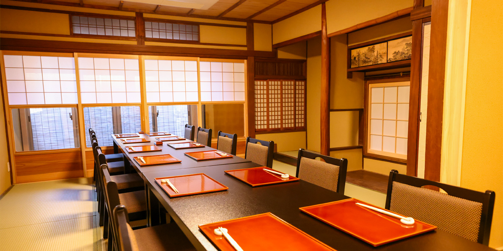

Japanese cuisine "HANASAKI" in Kyoto
花街の風情漂う
宮川町の町家で
京料理を堪能
北に八坂神社、東に建仁寺、西に鴨川……
石畳が続く花街の静かな佇まい。
古都京都の風情と季節を感じる祇園四条。
花咲は、京都五花街のひとつ宮川町で、
京町家風情を色濃く残した一軒。
豆腐・生麩・湯葉・京野菜に鱧、蟹……
個室やお座敷でゆったり寛ぎながら、
京都の四季折々の美味をお愉しみいただけます。
お昼は和食ランチの営業もしております。
御旅行のお食事に。大切なビジネスに。
様々な人生の節目の記念に。
匠の技と食、おもてなしの心でお迎え致します。
- ご宴会
- 接待
- 結納
- 記念日
-
Party ご宴会
花咲自慢の京会席料理＋飲み放題も選べる御宴会用プランをご用意。
お一人様12,000円〜の明朗会計で、安心して京都の夜をお愉しみいただけます。
ゆったりお座敷個室でご家族・親族・お仲間・会社や仕事などの各種お食事・会合にご利用ください。
事前ご予約にて舞妓さんもお呼びいただけます。
-
Client lunch & dinner 接待
大切なビジネスにも安心してご利用いただける完全個室にて、接客係が給仕致します。
京都へお越しになる海外からのお客さまへ向けて、英語のメニューも準備しております。
お席がうまく運びますよう、席順のお打ち合わせやお土産の手配なども承ります。
舞妓さんも手配可能、普段とは違う宴席にゲストの方にもきっとご満足いただけます。
-
Engagement 結納
お顔合わせや御結納など、ご両家の良き日に華を添えるお料理と空間。
季節感を織り込んだ華やかな祝い京会席やご結納料理をご用意致します。
お土産品、司会者、結納品の事前預かり、着物レンタル・着付けなども承ります。（有料）
顔合わせ・結納ご利用の方には、提携店婚礼撮影10％割引特典を進呈いたします。
-
Anniversary 記念日
誕生日や結婚記念日、還暦、喜寿、米寿の祝い、退職祝いなど……
ビジネスやプライベートに関わらず、様々な節目の祝い事にご利用いただいております。
ご用途をお知らせいただきましたら、記念撮影などの対応もさせていただきます。
ゲストのお好みや想い出の食材など、お料理のご要望などもお申し付けくださいませ。


Miyagawacho is one of Kyoto's five Hanamachi districts
京都五花街のひとつ
宮川町に佇む
風情ある京町家
花咲宮川町店は、祇園四条駅の南、
建仁寺そば〜宮川町通り沿いにございます。
昼は観光客で賑わい、夜は静かな花街の風情。
喧騒を離れ、和やかな時が流れる京町家で、
大切なゲストの方をお迎えいたします。